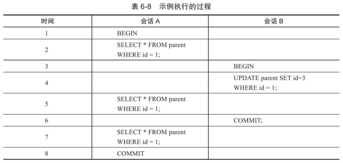
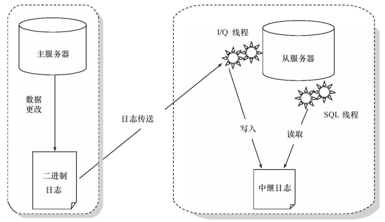

InnoDB——锁、事务和复制
锁
数据库系统使用锁是为了支持对共享资源进行并发访问，提供数据的完整性和一致性。
InnoDB存储引擎中的锁
- 共享锁（S Lock），允许事务读一行数据
- 排他锁（X Lock），允许事务删除或更新一行数据
兼容性：
- S与S可以兼容
- X不与任何锁兼容
InnoDB支持多粒度锁定，也就是允许行级和表级的锁同时存在。实现方式为通过意向锁（Intention Lock）：如果需要对最细粒度进行加锁，需要在上层粒度加意向锁。
具体举例，如果需要对行加X锁，需要对表、页依次加IX锁。当意向锁遇到等待时，必须等待结束后才能继续对下级加锁。如准备加对一行有S锁的行加S锁，行记录因为原来就有S锁，所以表和页都已经存在了IS锁，首先新的IS锁加在表上，因为IS、IS锁兼容，可以加上；然后再看页锁，同样IS、IS兼容，可以加上；最后看行锁IS与S兼容，那么行记录可以加上S锁。对同样这行有S锁的行加X锁，先加表IX锁，IX与IS兼容，可以加上，页同样，最后IX锁与行记录上的S锁不兼容，因此要等待S锁释放后才能加上X锁。
一致性非锁定读
一致性非锁定读（consistent nonlocking read）是指InnoDB存储引擎通过行多版本控制（multi version）的方式来读取当前执行时间数据库中行的数据。在行记录正在执行DELETE或UPDATE时执行读操作，不会等待锁释放，而是会去读undo段中的行的快照数据。
在不同的事务隔离级别下，读取方式不同，不是每个事务隔离级别都采用非锁定的一致性读，即使使用CNR，对快照数据的定义也不一样。快照数据就是undo段中的历史版本，一行记录可能有多个版本，一般称为行多版本技术，由此带来的并发控制，称之为多版本并发控制（Multi Version Concurrency Control，MVCC）。
在事务隔离级别READ COMMITTED下，非一致性读总是读取被锁定行的最新一份快照数据，而在REPEATABLE READ事务隔离级别下，对于快照数据，非一致性读总是读取事务开始时的行数据版本。
 表中所示的事务执行过程，在READ COMMITED中会话A可以SELECT到0个id=1的结果，因为已经被会话B所更新；而在REPEATABLE READ中因为读取的是事务开始前的快照，因此结果不会发生变化（可重复读）。
一致性锁定读
REPEATABLE READ隔离级别下，InnoDB的SELECT操作使用一致性非锁定读，但支持两种一致性锁定读操作：
- SELECT…FOR UPDATE (X Lock)
- SELECT…LOCK IN SHARE MODE (S Lock)
锁的算法
InnoDB存储引擎有3种行锁的算法：
- Record Lock：单个行记录上的锁
- Gap Lock：间隙锁，锁定一个范围，但不包括记录本身
- Next-Key Lock：Gap Lock+Record Lock，锁定一个范围和记录本身
InnoDB对于行的查询都是采用Next-Key Lock，例如索引有10，11，13，和20，那么可锁定的区间有：
- (-∞, 10]
- (10, 11]
- (11, 13]
- (13, 20]
- (20, +∞)
Next-Key Lock的设计是为了解决Phantom Problem。除了Next-Key Lock还有Previous-Key Lock，区别在于区间的开闭。
CREATE TABLE z(a INT,b INT,PRIMARY KEY(a),KEY(b));
INSERT INTO z SELECT 1,1;
INSERT INTO z SELECT 3,1;
INSERT INTO z SELECT 5,3;
INSERT INTO z SELECT 7,6;
INSERT INTO z SELECT 10,8;
现在z表中有如下数据：
mysql> SELECT * FROM z;
+----+------+
| a | b |
+----+------+
| 1 | 1 |
| 3 | 1 |
| 5 | 3 |
| 7 | 6 |
| 10 | 8 |
+----+------+
开启一个事务，锁定b=3行：
mysql> SELECT * FROM z WHERE b=3 FOR UPDATE;
+---+------+
| a | b |
+---+------+
| 5 | 3 |
+---+------+
1 row in set (0.00 sec)
由于Next-Key Lock的存在，现在在辅助索引上3所处的区间被上锁，也就是(1,3]。需要注意的是InnoDB还会对3的下一个区间加上gap lock，也就是(3,6)。那么此时如果往这些区间内做其他操作会被阻塞：
mysql> INSERT INTO z SELECT 6,5;
在列a上由于是唯一索引列，Next-Key Lock会降级为Record Lock，因此在索引a上的锁定只针对a=5这一行。
Gap Lock的作用是为了阻止多个事务将记录插入到同一范围内，这会导致Phantom Problem的产生。
InnoDB只在能够定位到唯一行的情况下将Next-Key Lock降级为Record Lock，也就是特别需要强调唯一索引由多个列组成的情况，查询其中部分列仍会使用Next-Key Lock。
Phantom Problem是指在同一事务下，连续执行两次SQL会导致不同的结果，第二次的SQL语句会返回之前不存在的行。
+---+
| a |
+---+
| 1 |
+---+
| 2 |
+---+
| 5 |
+---+
SELECT * FROM t WHERE a>2 FOR UPDATE;
Next-Key Locking这里锁住的不仅仅是a=5这个行，而是锁定(2,+∞)这个范围，因此此时如果使用的是REPEATABLE READ的话是无法向这个范围内INSERT数据的，不会存在Phantom Problem。而如果是COMMITTED READ则允许写入，例如下次执行的时候可能就会新增了一条a=4的记录。
锁问题
- 脏读，就是在读到另一个事务中未提交的数据，违反数据库的隔离性
- 不可重复读，事务内读取同一数据集合，由于另一个事务的修改，事务两次读到的数据可能是不一样的，违反了数据库事务一致性的要求
- 丢失更新，在事务中不使用SELECT…FOR UPDATE的查询，在SELECT和UPDATE之间由其他事务进行了SELECT，在UPDATE COMMIT之后，其他事务也进行UPDATE（基于它自己的SELECT结果）和COMMIT，那么就相当与地一个事务的UPDATE没有其作用，需要操作串行化或者FOR UPDATE加锁解决
死锁
死锁是指两个或两个以上的事务在执行过程中，因争夺锁资源而造成的一种互相等待的现象。
死锁举例：
- A SELECT a=1 FOR UPDATE
- B SELECT a=2 FOR UPDATE
- A SELECT a=2 FOR UPDATE（阻塞，等待B释放）
- B SELECT a=1 FOR UPDATE（阻塞，等待A释放）
在InnoDB中会话A会得到记录为2的这个资源，因为B会被因死锁而回滚。
锁升级
Lock Escalation是指将当前锁的粒度降低，如将1000个行锁升级为一个页锁。InnoDB不存在锁升级问题。
事务
InnoDB中的事务完全符合ACID特性：
- 原子性（atomicity）
- 一致性（consistency）
- 隔离性（isolation）
- 持久性（durability）
通过在事务中使用SAVE WORK函数可以建立保存点。保存点可以通过ROLLBACK WORK: n来回滚。
事务的实现
事务的隔离性由上一章讲的锁来实现。原子性、一致性、持久性通过数据库的redo log和undo log来完成。redo log称为重做日志，用来保证事务的原子性和持久性；undo log用来保证事务的一致性。
redo log和undo log不是相互的逆过程，redo log是物理日志，而undo log是操作的逆向操作，是逻辑日志。
redo
redo log是用来实现事务的持久性，即ACID中的D，由内存中的redo log buffer和磁盘的redo log file组成。
当事务提交时，必须将所有日志写入重做日志文件进行持久化，待事务的COMMIT操作完成才算完成。重做日志指的是redo log和undo log，redo log是用来保证事务的吃就行，undo log用来帮助事务回滚及MVCC的功能。redo log基本顺序写，而undo log是需要进行随机读写的。
在每次将重做日志缓冲写入重做日志文件后，InnoDB都调用一次fsync操作，确保日志写入重做日志文件。磁盘性能决定了事务提交的性能。
在数据库中还有一种二进制日志（binlog），用来进行POINT-IN-TIME的恢复和主从复制环境的建立。redo log是在InnoDB存储引擎层产生，bin log是在MySQL数据库的上层产生，并且不只是对InnoDB引擎的；同时bin log是逻辑日志，记录的是对应的SQL语句，redo log是物理格式的日志，记录的是每个页的修改；binlog只在事务提交完成后一次写入，redo log在事务进行中不断地被写入，因此redo log不是随事务提交的顺序进行写入的。
redo log是物理日志，因此它是幂等的，而bin log由于是逻辑日志，如INSERT等操作不是幂等的，所以它不能被重复执行。
undo
在对数据库进行修改时，InnoDB存储引擎不但会产生redo，还会产生一定量的undo。这样如果用户执行的事务或语句由于某种原因失败了，又或者用户用一条ROLLBACK语句请求回滚，就可以利用这些undo信息将数据回滚到修改之前的样子。
与redo log放在文件不同，undo放在数据库内部的一个特殊段中，称为undo段，位于共享表空间中。
undo是逻辑日志，回滚时修改会被逻辑地取消，数据结构和页本身在回滚之后可能不太相同，因为这个过程中可能有其他并发的事务，因此不能将一个页回滚到事务开始的样子。InnoDB回滚时实际上是做与之前相反的工作，例如对于INSERT会回滚一个DELETE操作。
undo除了回滚以外的另一个作用是MVCC，若记录被其他事务占用，当前事务可以通过undo读取之前的行版本信息，以此实现非锁定读。
undo log会产生redo log，因为undo log也需要持久性的保护。
事务提交后不能马上删除undo log及undo log所在的页，因为可能还有其他事务需要通过undo log得到行记录之前的版本。事务提交时会将undo log放入一个链表，是否可删除由purge线程来判断。
purge
DELETE FROM t WHERE a=1;
DELETE操作仅是将主键列中等于1的记录delete flag设为1,记录还存在在B+树上。purge用于最终完成delete和update操作，因为MVCC所以记录不能立即处理。若该行记录已经不被其他任何事务引用，那么就可以进行真正的DELETE操作。
group commit
事务非只读的话，需要在提交时执行fsync操作，保证重做日志都写入磁盘。但是fsync性能是有限的，为了提高效率，数据库提供了group commit功能，一次fsync可以刷新确保多个事务日志写入文件。
BLGC是指：
- Flush阶段，将每个事务的bin log写入内存
- Sync阶段，将内存的bin log刷到磁盘，若有多个事务，通过一次fsync完成bin log的写入（BLGC）
- Commit阶段，leader根据顺序调用存储引擎层事务的提交
复制
复制是MySQL数据库提供的一种高可用高性能的解决方案。因为不是InnoDB实现，所以使用来传递数据的文件不是redo log而是bin log：
- 主服务器将数据更改记录到bin log中
- 从服务器将bin log复制到自己的中继日志（relay log）中
- 从服务器重做中继日志中的日志，把更改应用到自己的数据库上，达到数据的最终一致性
从服务器有两个线程，一个是I/O线程，负责读取主服务器的二进制日志，并将其保存为relay log，一个是SQL线程，负责执行relay log。
